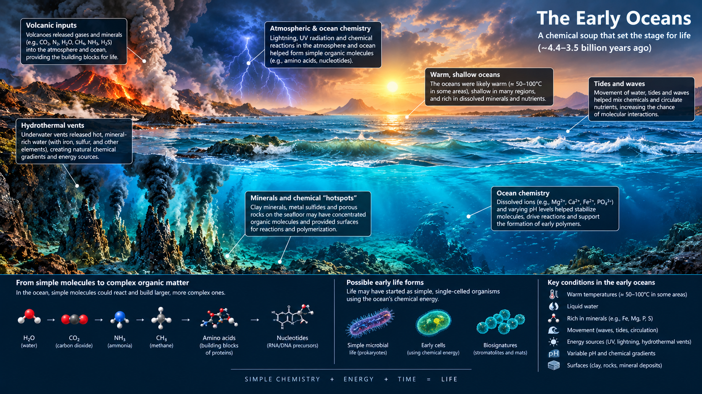

The Primorial soup is refering to the large oceans of the early Earth with the organic molecules from the sky raining down into it. This is primary theory of Abiogenesis. The oceans can be a good and comfortable place for the early life with vast area for the life to evolve.

The Early Earth Oceans
The ocean will have carbon from carbon dioxide and the is no problem with water. So this metarials can come together to form organics. Nitrogen can come from the breakdown of thee Nitrogen molecules by the sun rays. But there is a problem with this theory. Because the ocean is just so vast and the starting metarials are so scarce, there isn't enough metarial in a given area to be saficiant enough for the life to emarge. So eventhough there carbon, hydrogen and oxygen in the water the formation of lipids and other organic molecules. The element Phosphorus is not also available. Because Calcium attecks it. So even if the somehow the ocean have a lot of phosphates but the oceans are also Calcium rich. So Phosphorus will be unavailable. And the breakdown of nitrogen combine into the Nucliotides, but the is no way to polymerize it into RNA.